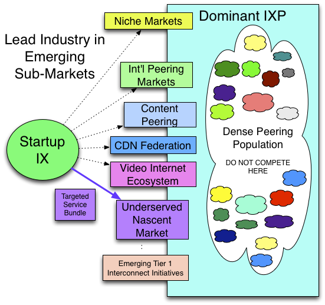

Tactic 6. Beachhead Verticals and Niche Markets
When the dominant IXP peering population is strong, a frontal assault may be ineffective. The startup IXP would instead attack the dominant IXP where it is weak. There needs to be a selection of reasons for ISPs to select an alternative IXP. Since the dominant IXP is strong in peering population, this tactic focuses on the dominant IXP attributes that are weak. The weak points might include:
1. Weak or no service-level agreements (SLAs). Many IXPs in Europe are run as not-for-profit associates providing best-effort peering services without a budget or inclination for SLA reimbursements. Some corporations want to buy from a commercial company that provides these guarantees.
Value of the IXP = f(p, r, v, m) - c
p: The population
r: The routes available
v: The volume of traffic exchanged
m: The market perception of the IXP
c: The cost of participatioon at the IXP
2. Constrained Private Peering. Some IXPs do not allow Private Peering or require IXP parent approval. The JPIX, for example, refused to allow a cross-connect between participants that sought to bypass the JPIX parent (KDDI) transit services. For some large ISPs, requiring the use of a public switching fabric presents a significant downside: it introduces possibilities for bandwidth stealing by pointing default (directing all traffic to the peer instead of just sending the traffic destined to the peers customers). Further, it represents a decrease in control over their infrastructure since a third party is involved.
3. Insufficient terms and conditions. European-style IXPs are driven by their participants who are less sympathetic to the unique terms and conditions required to get the large competitors into the IXP. Commercial IXPs, on the other hand, are able to negotiate the price, the duration, and most aspects of a commercial agreement.
4. Content Providers not allowed. Some IXPs (used to) not allow Content Providers to peer at their IXP. (Note that this restriction is less common nowadays.)
5. Insufficient operations support. Security issues, access issues, and time to add racks and services may also be differentiators.
6. No transit sales allowed. Some IXPs do not allow transit traffic to traverse their infrastructure. With no revenue-generation potential at the dominant IXP, an upstart IXP can build critical mass by serving this underserved market. (Note that this restriction is less common nowadays.)
7. Underserved peering market niche. An IXP can build a differentiated service along different dimensions, including the population served. For example, Japan has three large dominant exchange points, which tend to appeal to three distinct domestic peering markets.
This tactic involves identifying and addressing underserved niche markets. For example, international ISPs looking to establish regional interconnections may be best served at an international IXP. This startup IXP might offer liaison, language, and local services in the native currencies in tune with the overseas customer.
The financial services market is another example of a market with unique needs and motivations, and a distinct critical mass from the ISP peering population. Hiring a liaison from this sector to facilitate building this market segment is a way to build a beachhead.
The Beachhead Verticals and Niche Markets can best be diagramed in Figure 13-7.

Figure 13-7. Beachhead Verticals and Niche Markets.
Other niche markets might include the emerging video ecosystems markets (ad placement, settlement, etc.), new Content Delivery markets (shared caching systems, CDN cooperatives, etc.), small ISPs that can’t afford the premium colocation services, etc. Where there is a mismatch between offered services at the dominant IXP, or where the emerging market isn’t big enough to warrant attention from the big IXPs, there is an opportunity to build a beachhead.
Once the upstart IXP population is built up, the IXP understands the market and can evolve the appropriate service bundle to uniquely service this demographic. Then there is value to the IXP and others can be attracted into the IXP.